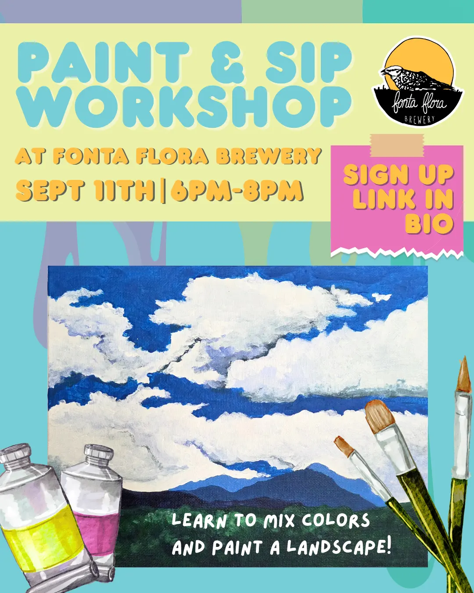
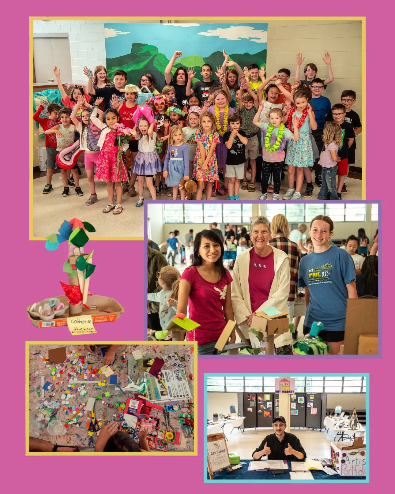
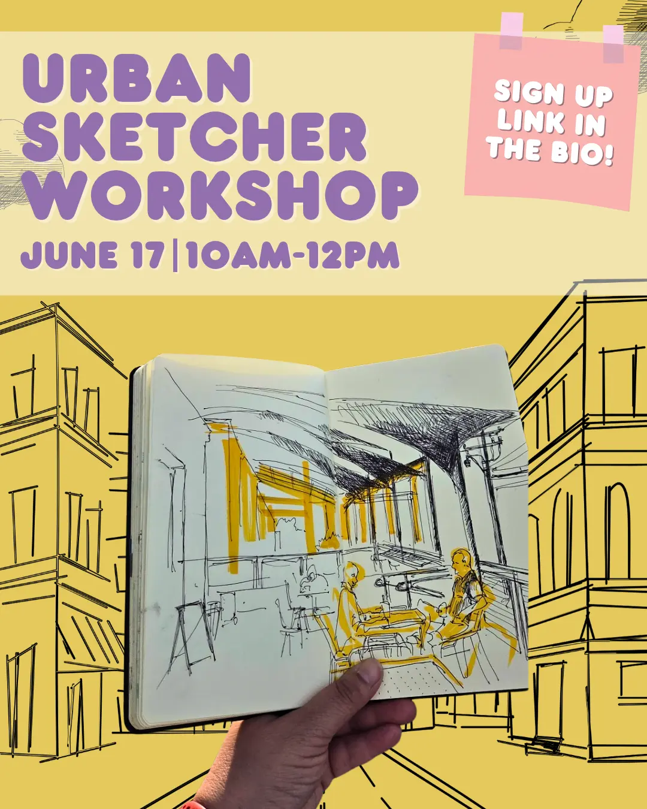
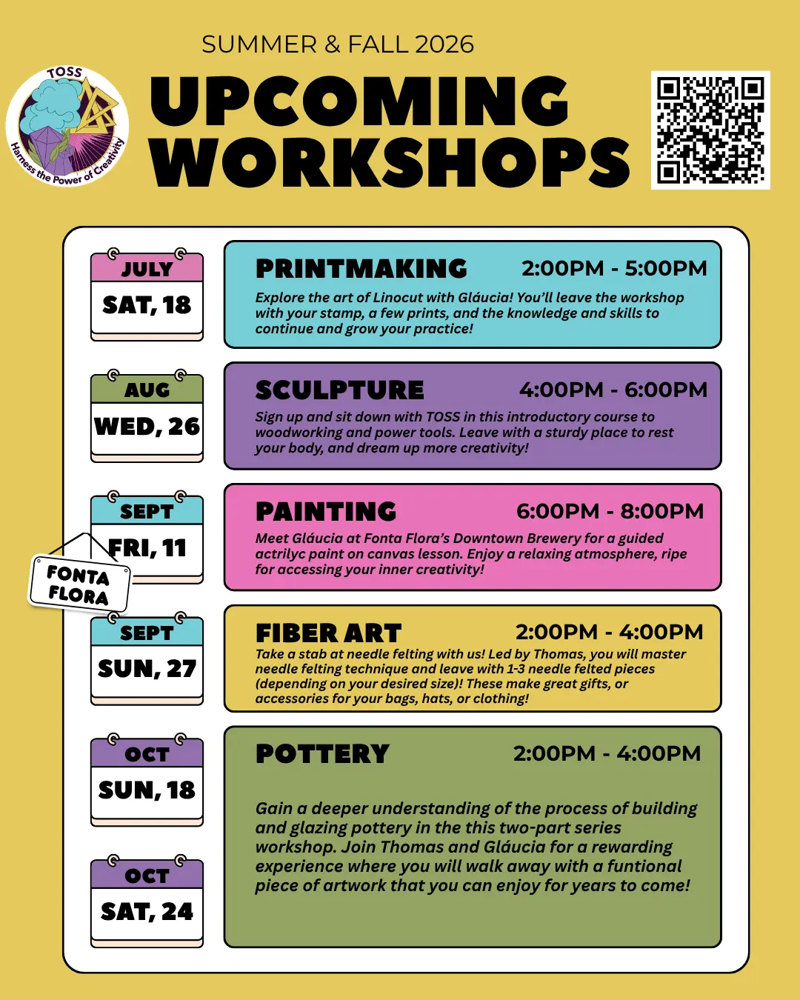
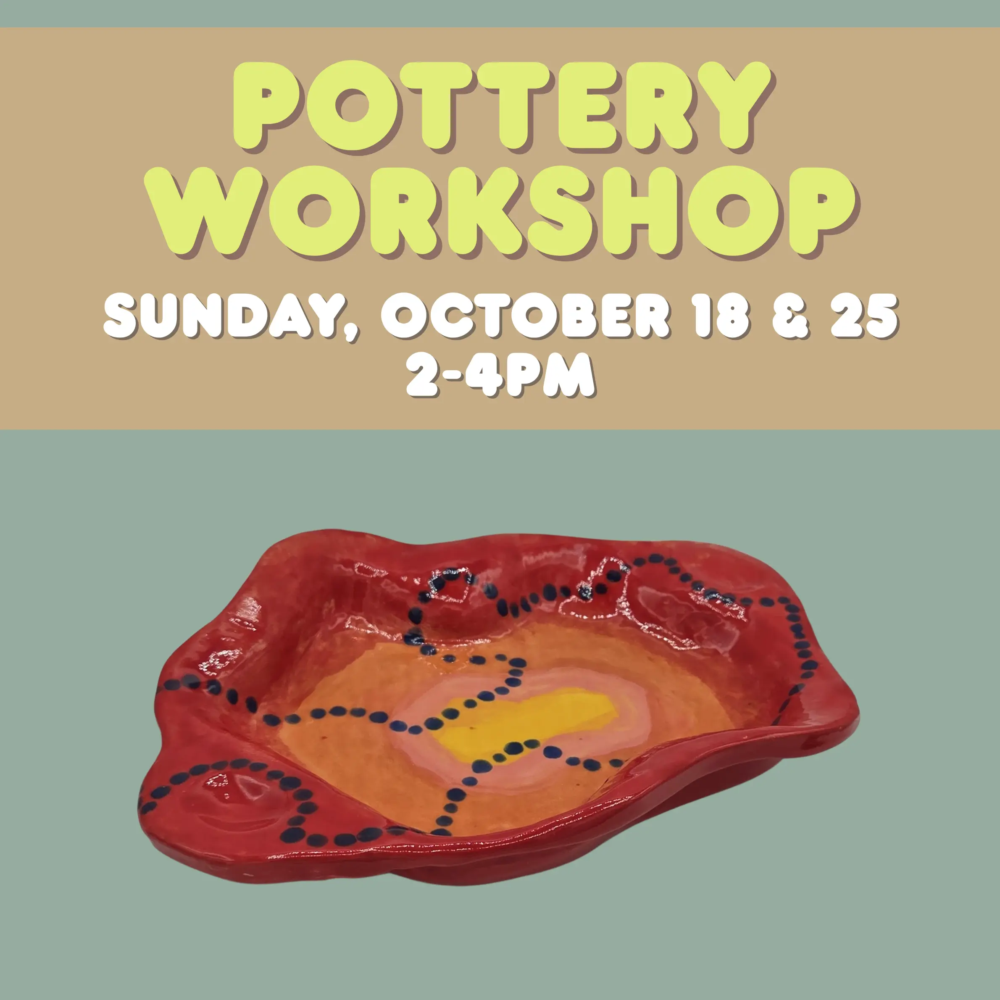
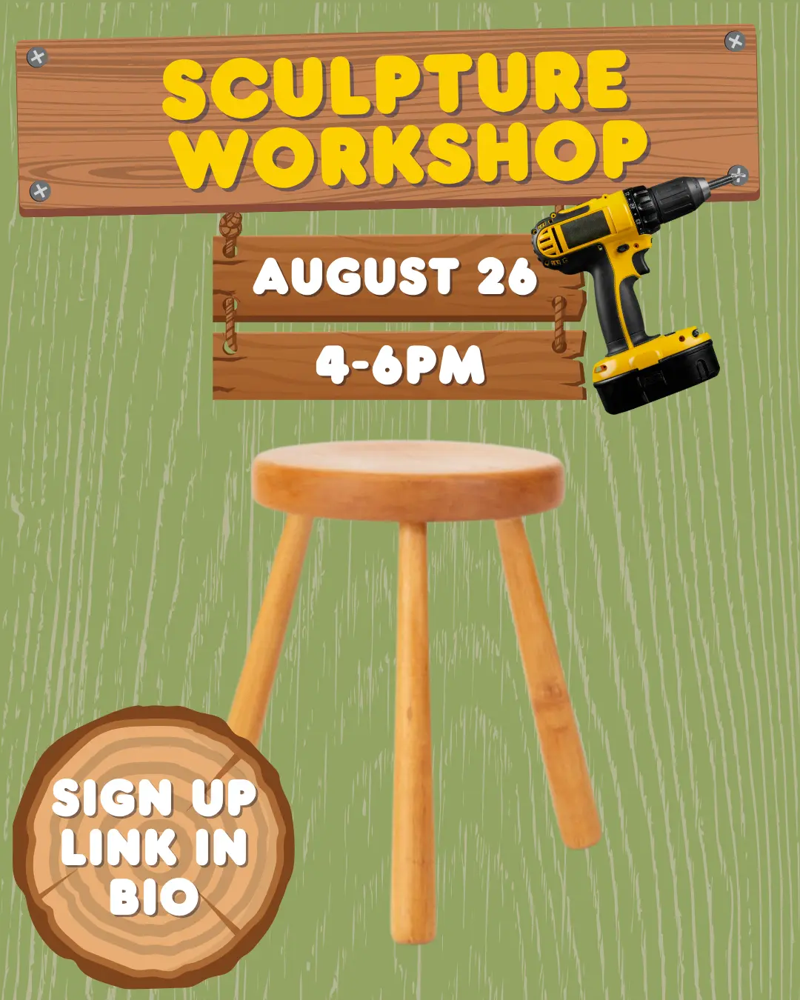

TOSS, also known as The Old School Studio, is a nonprofit arts organization located in Morganton, NC. They strive to educate students and the community about the arts while promoting environmental sustainability. For four summers, I've worked here as a camp assistant and somehow found myself stepping into a graphic design role for their social media this past summer!
Since I'm still freelancing with TOSS, I've had the opportunity to create a wide variety of content. From workshop graphics and monthly recaps to upcoming events and fun reels featuring art instructors and students, I've gotten to explore different ways to showcase what makes TOSS special.
Even though I've only been in this new role for a few months, I feel like I've already learned so much. I've gained experience planning content alongside the studio director, developing posts around the studio's three main social media pillars, and learning more about Meta Business Suite and its analytics tools.




